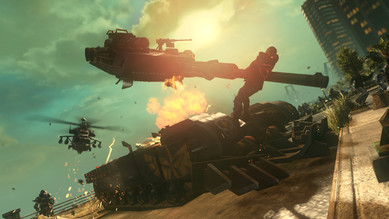
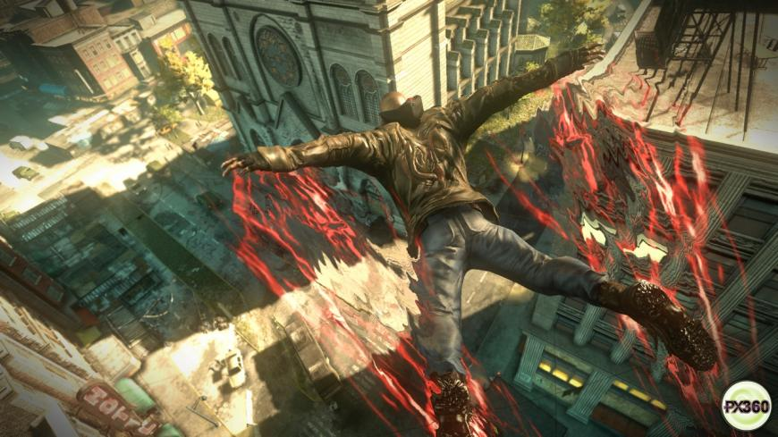

Prototype 2
Published by: Activision
Developed by: Radical Entertainment
Genre: Action/Adventure/Open-World
Platform Reviewed: Microsoft Windows, Sony Playstation 3, Microsoft XBox 360
70%
| Presentation: | 70% |
|---|---|
| Graphics: | 60% |
| Sound: | 70% |
| Gameplay: | 80% |
Forgettable fun
by Greg Miller
Date: April 24, 2012
There comes a point while playing Prototype 2 when you realize the marketing campaign was a lie. The Homecoming trailer weaves this heart wrenching story of a soldier who told his family to trust the government and how it cost them their lives. With that pain, Sgt. James Heller becomes a relatable character and we want to see him use his superpowers to exact revenge on those responsible. But that motivation is lost when the game starts and Heller begins shoehorning curse words into every other sentence. The emotional connection to our protagonist is severed. Heller becomes an angry caricature, and Prototype 2 becomes an enjoyable but predictable action title.
If you skipped the original Prototype, you won't have an issue jumping into the sequel. About 14 months after the events of the first game, New York City is once again in the grips of a viral outbreak -- supposedly at the hands of Alex Mercer, the antihero of the original title. Heller blames Mercer for the death of his family, and through a 14 or so-hour game (if you do all the side quests), it's our job to rain vengeance.
The story doesn't get much deeper than that. You'll partner up with shady characters throughout the journey, and they'll feed you missions that usually end with Heller beating the hell out of a bunch of soldiers or mutants. The setup is repetitive, but the action is entertaining.
Prototype 2 gives you five weapons to morph Heller's hands into, and you assign two of them to the face buttons. See, Heller's powers -- given to him in a WTF moment by Mercer -- allow him to create these tools of destruction, leap tall buildings in a single bound, and ingest people so he can steal their memories and shapeshift into their forms. He's also packing the ability to turn people into bio-bombs. So, know that.
It's a delicious recipe. Leaping into the air, targeting a foe and swooping in for a claw attack that beheads the bad guy is fun. Sneaking around a base disguised as a solider and absorbing unaware enemies is cool. Prototype 2 excels at making you feel like a badass. Completing tasks levels you up so you can move faster, fly farther and become invulnerable to gunfire. Absorbing specially marked characters upgrades your abilities so you can pounce on victims from farther away and increase the range of your Whipfist.
With each mission, you feel Heller getting stronger and stronger. Brutes that used to be the bane of your existence eventually become your pets and the first helicopter you KO with an uppercut will leave you feeling like the apex predator of New York City.
On top of that, developer Radical Entertainment nails what work works in open world games -- collectables. New York City is broken into three zones, and each section has a slew of side tasks to knock out. There are infected lairs to clear, teams to kill and blackboxes to find. Although you'll need to find these locales, the general areas are marked on your map. This is awesome and led to me spending an hour knocking out side missions as soon as I stepped foot on each island.
And while that's rad, it kind of points out one the problem with Prototype 2. I was playing to complete it -- to get the 14 blackboxes in the green zone and to get Heller's tendrils to level four. The grinding is fun, but I couldn't have cared less about why this priest had me attacking the 400th Blackwatch soldier that looked just like the 40th.
Even though becoming this ultimate killer is cool, it doesn't hide the fact that nearly every mission is running into a base, forcefully assuming an identity, and exiting the alert. It doesn't hide the fact that the animations for many of Heller's moves look like those of the nearly 3-year-old Prototype, which look like those of the nearly 7-year-old The Incredible Hulk: Ultimate Destruction.
Outside of the animations, Prototype 2 still doesn't look like a 2012 blockbuster game. Blackwatch badges are muddy on characters, and Heller's absorbing animations are clearly going through his body and not into it. The best example of all this comes as a stabbing scene at the very beginning. The knife goes into the body, but it's just gliding in like it's stabbing air -- the moves have no impact.
{kind=link}